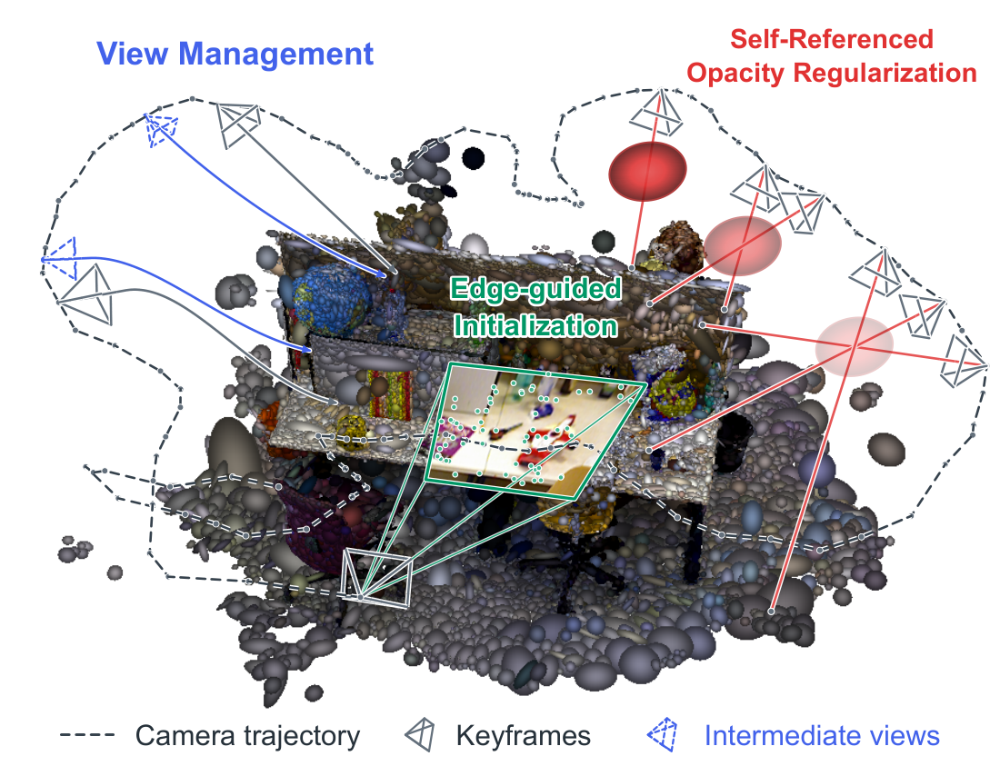

View Management with Gaussian Placement and Opacity Regularization for Online 3DGS
Under Review

Abstract
The realistic rendering of 3D Gaussian Splatting (3DGS) has drawn interest from real-time applications that require maps to be built online. This led to coupling 3DGS with SLAM, providing camera poses and initial Gaussians for the map. However, the map is still optimized with designs inherited from conventional SLAM, which train only on keyframes selected for localization and regularize geometry with uncertain frontend depth. These designs overlook the model complexity of a 3DGS map: with millions of parameters but few views of each region, the map overfits to sparse inputs. Resolving this is challenging, as every view and Gaussian added to the map competes for the same real-time budget. We close this gap from both sides. To add views while keyframes preserve the structure of the map, we progressively admit non-keyframe images as mapping updates complete and allocate the limited updates across different groups of frames according to the supervision each group provides. To control the model complexity of the map, edge-guided initialization places new Gaussians where image detail requires them. To complement the uncertain frontend depth, Self-Referenced Opacity Regularization (SOR) uses accumulated rendering evidence, at no extra rendering cost, to suppress the opacity of Gaussians that persistently contribute in front of a map-derived surface reference. Together, these designs improve both the appearance and the geometry of online maps within the available online optimization budget.